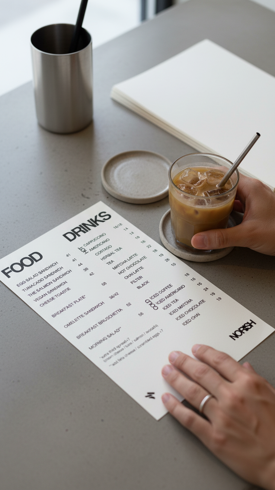
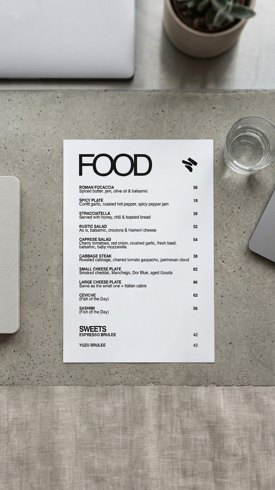
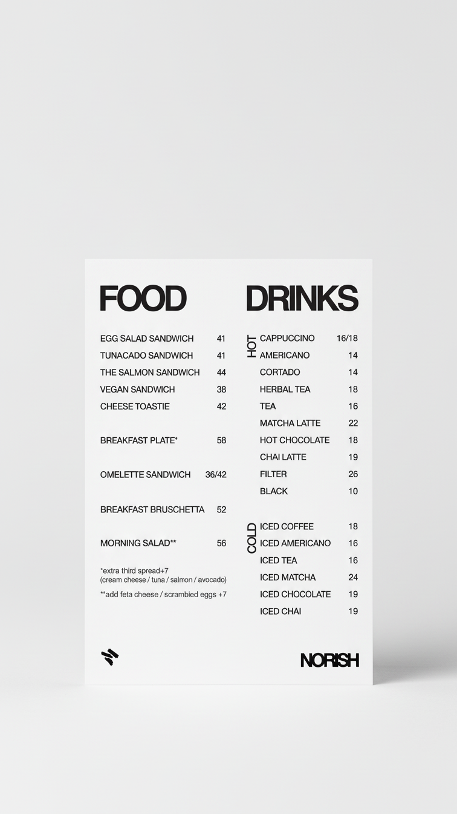
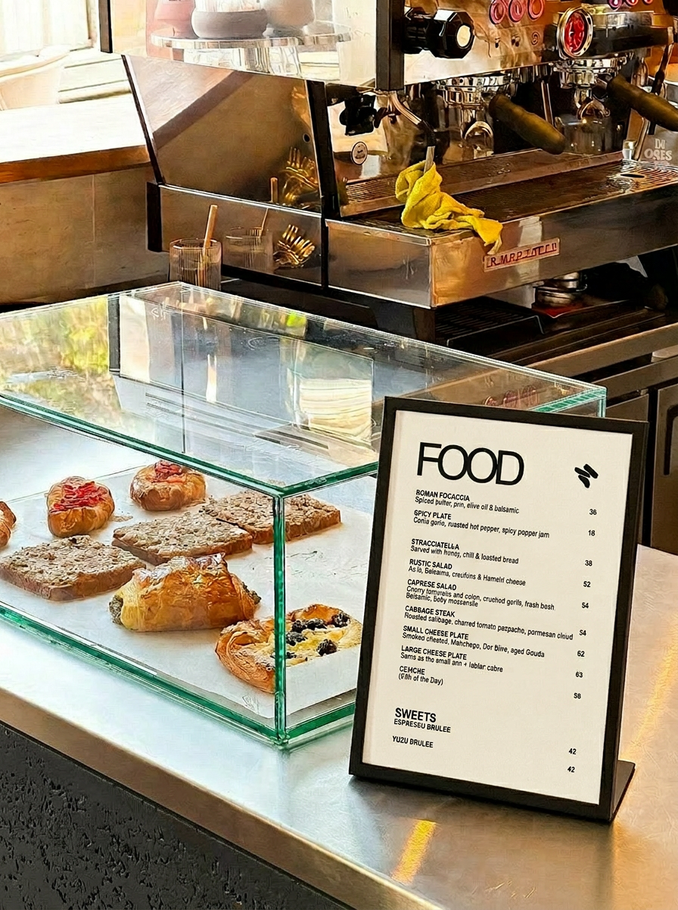

Norish
Menu design and identity system for a Tel Aviv café, built to feel effortless at the table.
Menu Design
Menu design works best when it disappears. The challenge at Norish was to create something a guest could navigate in seconds — legible under real conditions, consistent with the warmth of the place, and built to hold across print formats without needing to be reimagined each time.
The approach was typographic restraint: clear hierarchy, deliberate spacing, and a system structured around weight and proportion rather than decoration. Every decision made in service of function first, character second — in that order, not in spite of each other.
The result is a menu that earns its keep without asking to be noticed. For a place like Norish, that's probably the strongest thing the design can do.
Illustrations on drinks menu are by artist Yuval Fella










